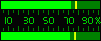

- When recording from a sound card, first you need to select an appropriate recording level for better quality. To display a current level press the Monitor input button:
This level is displayed in the peak/wave display window. You can select another graph type by left or right click. Note: use the logarithmic (dB) peak meter to detect low level sounds.
- After that use the Volume Bar to adjust a recording level. If you are making a microphone recording it is recommended to increase a volume until maximum peaks are around 70-80% (the rest is reserved to avoid distortions). The peak meter should look similar to this:
- 
If the peak bars aren't moving, check a correct recording source selected (see this topic).